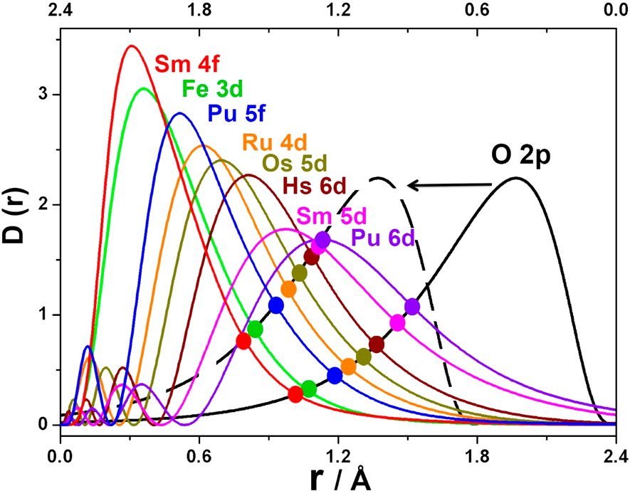

Python脚本计算RDF
在做化学键分析时经常会用到径向分布函数RDF，为了省事，写了个Python脚本快速计算出相应原子或离子的RDF。
文献中经常见到原子的径向分布函数图，是如何画出的呢？本文将进行简要介绍。

图片来源于Inorg. Chem. 2016, 55, 9, 4616-4625.
首先进行指定原子或离子的单点计算。
ADF输入文件大体如下：
1 | $ADFBIN/adf -n 10 << eor 1>out.Os 2>eor.Os |
ADF运算完成后，会产生out.Os文件。
运行python脚本，指定ADF的输出文件及要画的轨道: python RDF_analysis.py filename orbital
1 | python RDF_analysis.py out.Os 5d |
脚本运行结束，会产生相应的RDF数据文件，可导入到画图软件中作图。
RDF计算公式：
脚本下载
下面的脚本 将ADF输入文件嵌入到python脚本中，直接运行脚本即可，但需视情况修改脚本中的ADF提交命令。